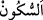

21. Halbuki şeytanın onlar üzerinde hiçbir nüfuzu yoktu. Ancak âhirete inananı,
şüphe içinde kalandan ayırdedip bilelim diye (ona bu fırsatı verdik). Rabbin
gerçekten her şeyi koruyandır.
“Andolsun,” Allah’a yemin olsun ki “Sebe’ kavminin oturduğu yerlerde” Allah’ın
lütfunun gereği olarak verdiği ihsan ve refah, kahrının îcâbı olarak nimetten mahrum
etmesi ve beldelerini harap kılması gibi bu kabileye âit geçmiş ve gelecek halleri
düşünmek sûretiyle, dilediğini seçen yaratıcının varlığına, benzeri olmayan işlerden
dilediği her şeyi yapmaya muktedir olduğuna, O’nun iyilik yapana da kötü davranana da
karşılığını vereceğine “büyük bir ibret vardır” delâlet eden açık bir alâmet vardır.
Bunları ancak âlimler anlar ve bunlardan ancak akıllılar ibret alır.
Sebe’ kavmi, Nuh (a.s.) oğlu Sâm oğlu, Arfahşat oğlu Şaleh oğlu Âmir oğlu Kahtan
oğlu Ya’rub oğlu Yeşcüb oğlu Sebe’nin evlâdlarıdır. Sebe’, Abdüşşems b. Yeşcüb’ün
lakabıdır. Süheylî’nin dediği gibi ona bu lakabın verilmesi onun ilk esir alan kimse
olması sebebiyledir. O Yemen kabilelerinin hepsini kendisinde toplar. Ya’rub b. Kahtan
ilk Arapça konuşan kişidir. O Yemen Araplarının atasıdır. Onlara “el-Arabü’l-âribe”
denir. İsmâil (a.s.)’ın diliyle konuşanlara ise “el-Arabü’l-müsta’ribe” denir. Bu dil,
Hicaz halkının dilidir. Kahtan Arapçası İsmâil (a.s.)’dan öncedir. Ancak bu durum,
Arapça’yı ilk konuşanın İsmâil (a.s.) olmasıyla çelişmez. Çünkü İsmâil (a.s.) açık ve
hâlis Arapça’yı ilk konuşandır. Bu Kur’an’ın kendisiyle nazil olduğu Kureyş
Arapçasıdır. Yine bu durum Arapça’yı ilk olarak cennette Âdem (a.s.)’ın konuştuğuna
dâir rivayetle çelişmez. Çünkü Âdem (a.s.) yeryüzüne indirilince Süryânîce
konuşmuştur. Bir rivâyette “Arapça’yı güzel konuşan Farsça konuşmasın. Çünkü bu
nifak peydâ eder.”[20] buyrulmuştur. İnsanlar arasında Peygamberimiz (s.a.)’in “Dâd
harfini en fasih söyleyen benim.”[21] sözü de dillerde dolaşan meşhur bir sözdür. Bir
topluluk ‘Bu rivayetin aslı yoktur, ancak mânâsı doğrudur’ demiştir. Çünkü bu sözün
mânâsı, ‘Ben Arabın en fasih konuşanıyım. Zira dâd harfini konuşanlar onlardır. Onların
dilinden başkasında ise bu harf yoktur.’ demektir. Nitekim Ali b. Burhâneddîn
Halebî’nin İnsânü’l-uyûn adlı kitabında böyle geçmektedir.
“
” bir şeyin hareket ettikten sonra sâbit olmasıdır. Bir yeri vatan tutmak hakkında
da kullanılır. Mekân ismi, “mesken”dir. Yâni onların Yemen’de bulundukları
beldelerinde, demektir. Sebe’ halkının oturduğu yer Me’rib’dir. Onunla San’â şehri
arasında üç günlük mesafe vardır. Neml sûresinde kıssası geçen Sebe’ melikesi
Belkıs’ın beldesinden murat bu Sebe’dir.
Süheylî der ki: Me’rib, Sebelilerin krallarının adıdır. Aynı şekilde “kisrâ” Fars
krallarının, “hâkan” Çin krallarının, “kayser” Rum krallarının, “fir’avn” Mısır
krallarının, “tübba’” Şahr, Yemen ve Hadramut krallarının, “necâşî” Habeş krallarının
adıdır. Me’rib’in sebelilerin sarayının adı olduğu da söylenmiştir. Bunu Mes’ûdî